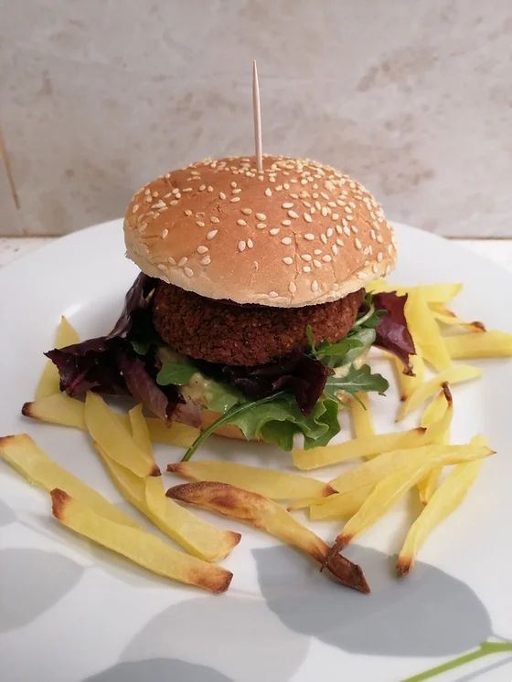

Hambúrguer de Feijão Vermelho
Tempo de preparação
10min
Horas de Cozimento
20min
Tempo Total
30min
Porções
4

Ingredientes
Hambúrguer de feijão vermelho:
- uma lata (250 g) de feijão vermelho escorrido
- 1 cenoura ralada
- farinha de aveia q.b
- sal q.b
- pimenta preta q.b
- pimentão doce q.b
- noz moscada q.b
Batatas assadas no forno:
- 2 batatas grandes cortadas em forma de palito
- sal q.b
Instruções
- Pré aqueça o forno a 180ºC. Numa bacia, misture as batatas com o sal e disponha-as num tabuleiro forrado com papel vegetal, afastadas umas das outras. Deixe assar durante 10 minutos enquanto prepara os hambúrgueres.
- Numa trituradora coloque a cenoura ralada, o feijão vermelho escorrido e triture os dois ingredientes até ficarem numa pasta homogênea. Tempere com sal, pimenta preta, pimentão doce, noz moscada e vá colocando farinha de aveia até dar liga e conseguir moldar os hambúrgueres.
- Num outro tabuleiro à parte, forre este também com papel vegetal, disponha os hambúrgueres e coloque ao lado das batatas a assar durante 10-15 min. No momento em que coloca os hambúrgueres a assar, vire as batatas para que cozam totalmente.
- Quando os hambúrgueres e as batatas estiverem assadas e douradas, pode começar a montar o seu prato. O meu foi: pão de hambúrguer (aproveitei o quente do forno e coloquei 3 minutos a torrar), hummus de abacate, mistura de alfaces e rúcula, hambúrguer de feijão vermelho e uma rodela generosa de cebola roxa. Acompanhei então, com as batatas assadas.